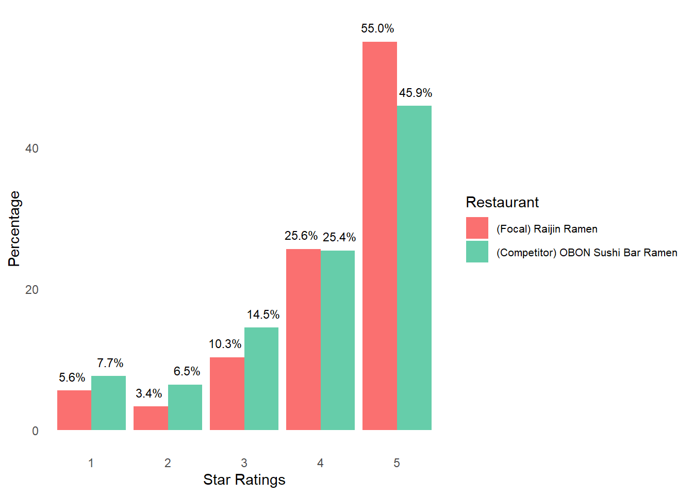
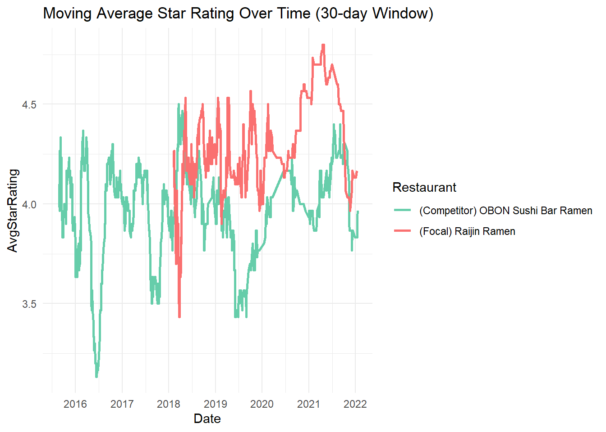
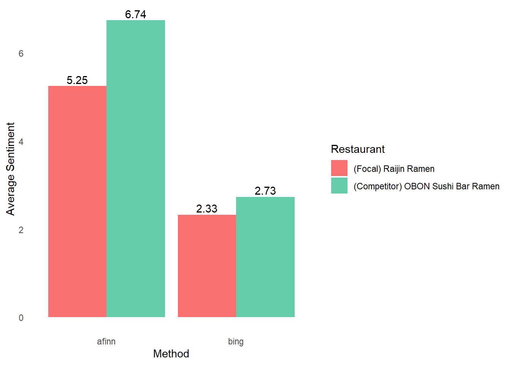
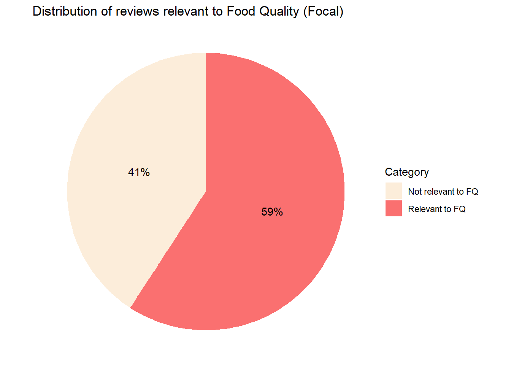
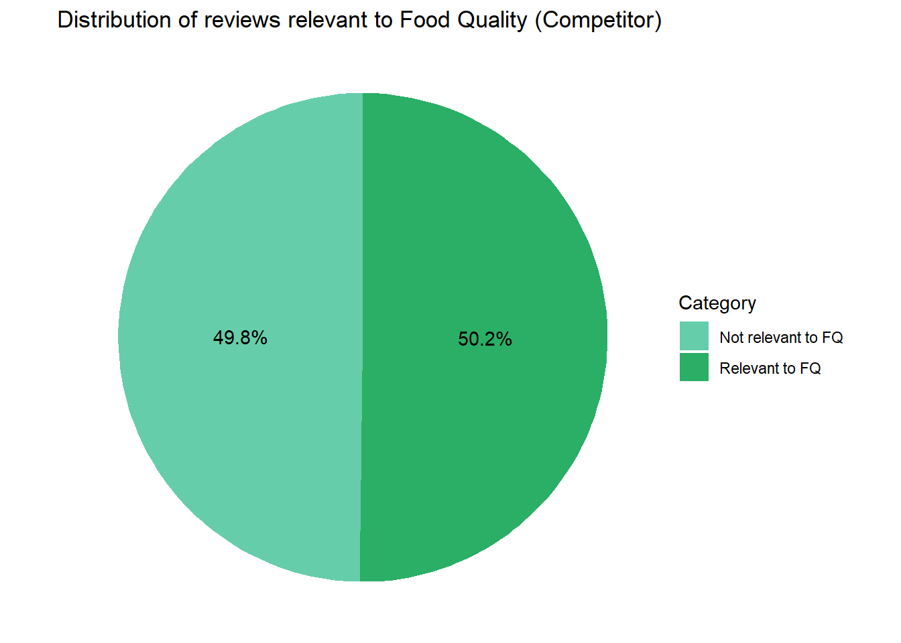
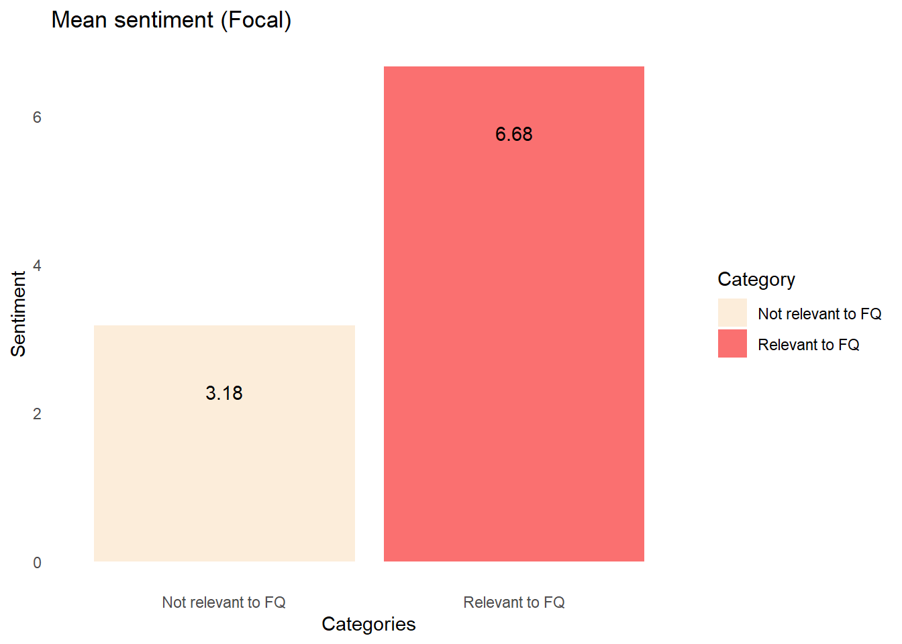
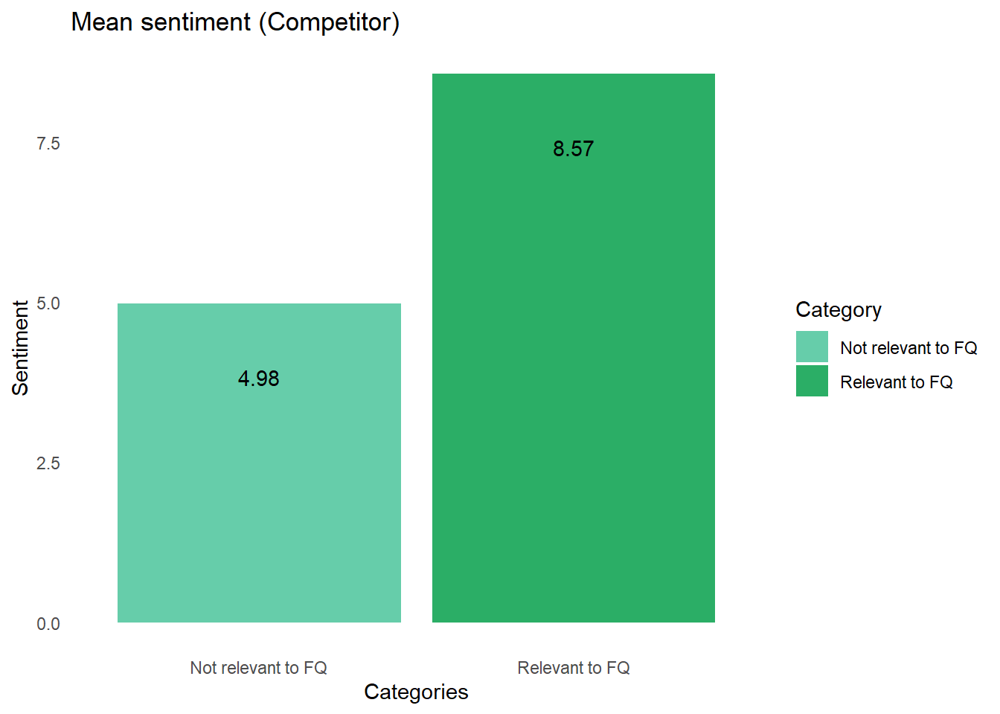

Restaurant Competitor Analysis
Introduction
This is a restaurant competitor analysis project featuring OBON Sushi Bar Ramen and Raijin.
OBON Sushi Bar Ramen (OBON) can be viewed as a direct competitor to Raijin Ramen (Rajin), primarily because of their shared specialisation in Ramen dishes, comparable pricing, and close proximity, as both restaurants are located within a 5-kilometre or 8-minute drive radius of each other. Furthermore, OBON aligns with Rajin in terms of its designated rest day, parking facilities, and wheelchair accessibility, eliminating additional variables for consideration in our analysis.
However, a notable distinction between the two establishments is their ambience. While Rajin offers a more traditional restaurant experience, characterised by its attributes and standard opening hours, OBON caters to a distinct customer segment. OBON sets itself apart through its extended opening hours, incorporation of music, and the inclusion of categories like Cocktail Bars and Nightlife, signalling its appeal to a different demographic seeking a vibrant and late-night dining experience.
Data preparation
We counted NA checks to see if there is any missing values, and found that for the dataset given, there was no missing values.
Star Rating Distribution
This chart indicates that Rajin boasts an overall superior rating, evident from its higher percentage of 5-star reviews compared to OBON’s more evenly distributed dataset. This observation is reinforced by the reviews dataset, which reveals an average star score of 4.21 for Rajin and 3.95 for OBON. Based on this star rating distribution, one could reasonably infer that Rajin offers a superior dining experience. Nonetheless, it’s imperative to consider the disparity in review counts, with OBON accumulating 707 reviews and Rajin 594. This discrepancy implies that OBON may have served a more diverse customer demographic, potentially increasing the likelihood of receiving unfavourable reviews. Thus, a more comprehensive analysis is warranted to make a definitive determination regarding the superiority of these two restaurants.

Average Star Rating Over Time
A 30-day analysis window was selected as it strikes a balance between granularity and capturing overall trends. A 14-day frame might fail to capture broader patterns, while a 90-day frame could smooth nuances in the data frame. Hence, a 30-day window allows for a more insightful analysis of weekly movements and long-term trends.
Analysis:
In the initial years of their establishment, both Rajin (2018) and OBON (2015) encountered a decline in their ratings. This trend is often anticipated for new restaurants, given that time is required to gain public trust and grow in popularity to become an established brand. However, OBON’s initial dip in ratings persisted for a longer duration compared to Rajin. This prolonged decline suggests the possibility of a shifting local preference and growing acceptance of Japanese cuisine, which may have impacted OBON’s performance.
Furthermore, during the period from 2019 to mid-2021, both restaurants experienced significant fluctuations in their performance. Notably, when one restaurant’s ratings declined, the other tended to rise. This observation suggests a competitive dynamic between the two establishments, marked by their exploration of diverse promotional and marketing strategies to grow their market share.
Lastly, the decline in late 2021 in reviews from both restaurants could indicate an industry or location-specific disruption. For example, there could have been a shortage of a common ingredient or seafood that is popular in ramen, served by these two restaurants. Alternatively, a new restaurant could have opened in the vicinity of Rajin and OBON, its novelty might have temporarily redirected customers to their establishment instead.
From early 2018 to early 2020, Rajin might have had some competitor advantage that allowed them to run effective marketing promotions and campaigns or employ a superior kitchen staff that allowed them to garner high-rated reviews. OBON might likely have only started to dedicate more effort to enhancing its ambience and food quality to better appeal to its targeted customer base, after attaining one of its lowest performances in reviews since its opening in mid-2019. Consequently, achieving an upward trajectory of high-rated reviews steadily rising against Raijin.
From late 2020 to 2021, it is likely that both businesses were affected by the COVID-19 pandemic which might have deterred customers from dining out in restaurants. Raijin likely adapted much quicker by adopting a food delivery model, with marketing promotions to maintain, or even boost sales.
On the other hand, OBON targets a broader spectrum of consumers, based on it fulfilling a broader range of categories. This might have made it more difficult for them to curate effective marketing campaigns that can effectively target all its customers, resulting in initial disadvantages compared to Rajin. OBON likely took longer to find a suitable marketing and business strategy to effectively compete with Rajin, and thus caught up later, as shown by the converging lines between the average ratings of Raijin and OBON closer to the third quarter of 2021.

Text Analysis
Using R’s Afinn and Bing dictionary, we did text analysis. Both restaurants exhibit an overall positive sentiment, with the competitor outperforming the focal restaurant in both lexicons (afinn and bing). However, the competitor achieved a higher score in the afinn analysis compared to the bing analysis. This difference may stem from the measurement tool itself, as afinn has a wider sentiment score range (-5 to 5) compared to bing’s narrower range (-1 to 1). The broader range of afinn likely assigned larger positive values (2 to 5) to words in the reviews of the competitor restaurant, contributing to its better score.


A total of 20-30 words as the bag of words for food quality (FQ) was generated to increase the robustness of our result. For Raijin, we have 59% of words being relevant, and the remaining as irrelevant to food quality. The same bag of words was used to analyse the competitor. For OBON, almost half (50.2%) of the words are relevant, and the rest are irrelevant to food quality.


Sentiment Analysis
Afinn was chosen for sentiment analysis to accentuate the differences in sentiments between Raijin and OBON. Reviews discussing food quality consistently display high positive sentiments in both restaurants. OBON stands out with higher positive sentiments in both ‘relevant to FQ’ and ‘not relevant to FQ’ categories. This suggests two key findings: OBON’s reviews contain more positive food quality factors than Raijin’s, and non-food factors like ambience, accessibility, and service quality contribute to OBON’s positive sentiment.
For managerial implications, both restaurants can leverage positive food quality sentiments in their marketing strategies to attract and retain customers. For Raijin, which performed less favourably, there’s an opportunity to conduct an internal analysis focusing on enhancing not only food quality but also non-food aspects like extending opening hours from 9 to 10 pm instead of its original 8pm. Other non-food aspects such as ambience, music, and service quality can elevate the overall dining experience and cultivate more positive reviews. To further enhance the analysis of customer feedback, a more detailed approach could be implemented. This involves creating distinct bags of words for various categories, including ambience, service, delivery, and cleanliness. This comprehensive strategy can lead to improvements in both the quality and quantity of reviews, ultimately enhancing the restaurant’s reputation.
We can enhance our sentiment analysis by creating word clouds of positive and negative words. This approach helps us identify the most frequently mentioned words by customers, thus enabling further improvements in our analysis.
Credits
Cherilyn Nicole Chan Tze Ling
Goh Hai Liang
Joyanna Jiang
Ryan Lim Jian Song